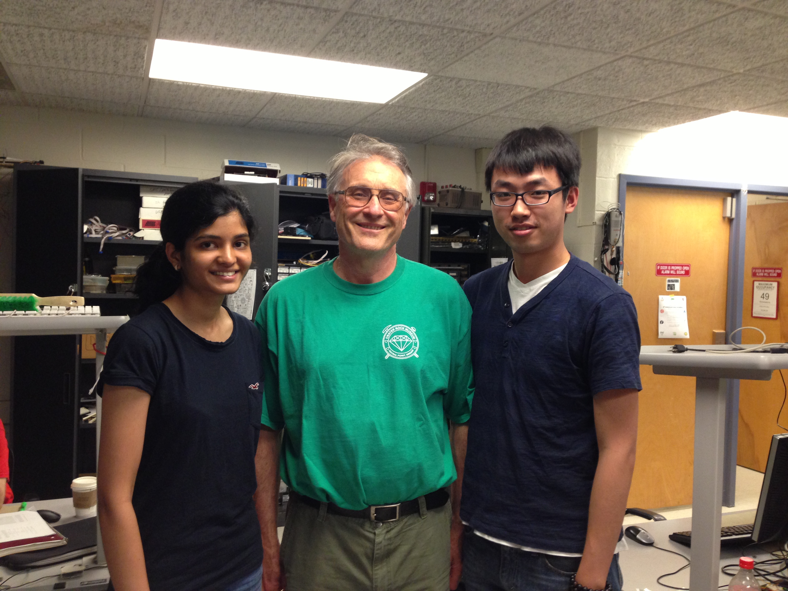

"A game of pong between two players, play by controlling the paddles using a hand tracking mechanism."
Project Soundbyte

Introduction top
This is a skin-detection based game of pong on a VGA monitor in which two players compete with one another to slip the ball past the other’s paddle towards the boundary. Each paddle follows the motion of a player’s hand in the vertical direction through an HTC 231x CCD camera. Each time a player misses stopping the ball, the other gets one point. The game ends when any one of the players gets five points and the appropriate win message is displayed on the screen. The system is independent of the tone of the user’s skin. We added sound effects each time the ball hits a boundary and bounces.
The idea was to parallelize all processes like skin-detection, centroid computation, ball control and sound generation in order to make the system as efficient as possible. However, there is scope to further improve the detection mechanism. The distance of the user’s hand from the camera affects the width and height of the hand detected and if too close, it is equivalent to a human face. Hence, a more robust mechanism can be developed to make it independent of the distance of the user from the camera.
Hardware Setup
High Level Design top
• Project idea - Rationale and Sources
The original idea was to generate an environment similar to Microsoft Paint but in which the user can draw on the screen wirelessly with the movement of the hands. We wanted to use different colors on each finger, track them using a camera and draw the appropriate color on the VGA screen. However, something similar was already done as a final project of a previous group of students in ECE 5760. Bruce suggested that we combine the original idea with the game of pong and use skin detection instead of color detection to make it more interactive and entertaining.
• Logical Structure
The block diagram shown in figure illustrates the basic structure of our project. The block diagram below is a modified version of the DE2_TV design from the Altera DE2 User Manual. We used the Video Input to VGA Display Project from the Altera Literature section of ECE 5760 web page and used it as our base code. It simply decodes the signal from camera and outputs it to the VGA by using the ITU-R 656 Decoder, SDRAM buffer and modules to convert YCrCb to RGB and VGA controller.
We added a skin detection filter in the YCrCb module to filtered out all colors except the skin color. The spatial average and low pass filter were used to get a smooth centroid point and store in a buffer 1. The Pong module is the main module for the pong game which calculates the movement of paddle and ball based on the output from the centroid point and stores that in buffer 2. By turning on or off the switch, the VGA can display either the skin filtered image or the pong game interface.
Figure 1. Block Diagram for High Level Design
• hardware/software tradeoffs
The main trade off we made is instead of using NIOS to implement the game interface part of the project, we implemented all our design in hardware. Doing this made the code implementation slightly complex for the game logic part, which required us to use two 2D buffers to store the down sampled and pong interface frame in one buffer. However, this gave us the added advantage of speed, concurrency and easy debugging.
Another tradeoff of our design is that instead of using SRAM to hold the temporal data, we simply used two register arrays as the frame buffers. This has a significant drawback on compiling time(15 min each time) and logic elements on the FPGA, but saves us a lot of trouble that comes with synchronizing the SDRAM, SRAM, and VGA controller, especially when we need to read and write data simultaneously or at multiple locations.
• Existing Copyrights
Our project make use of a modified top module code from altera (copyrights are kept intact in the code), time average filter written by Prof. Bruce, and the VGA Control Module written by a previous student Skyler Schneider. More details are discussed in the Intellectual Property Considerations in the Conclusion section.
Program/Hardware Design top
The most tricky part of the code was synchronization between the various modules used - SDRAM, frame buffers and the VGA since we wanted to parallelize the execution of all modules. We tried different mechanisms that processed data point-by-point by using the SRAM to store intermediate data. However, this effectively reduced to simply connecting a wire from the camera to the VGA monitor with no memory. Each time there is a timing issue between computation speed and rate of writing to the VGA, an easy solution is to copy the computed data to a temporary register before sending it to the VGA. We noticed that this works in most cases.
Another tricky issue is to get rid of the noise that arises due to objects in the background that are close to skin tones or detecting fewer pixels of the skin due to poor lighting. In order to eliminate this, we added a filter in YCbCr2RGB.v module by trashing the Y-component and editing the Cb and Cr component ranges by trial and error instead of normalizing the R,G and B values. We initially set the Cb and Cr ranges as :
77 < Cb < 127 and 133 < Cr < 173
as mentioned in “Explicit Image Detection using YCbCr Space Color Model as Skin Detection” - by Jorge Alberto Marcial Basilio, Gualberto Aguilar Torres, Gabriel Sanchez Perez, L. Karina Toscano Medina, Hector M. Perez Meana. The paper is here.
• Hardware details
Hand Tracking :
The NTSC video signal from the camera is stored in the SDRAM at the rate of the TV Decoder Line clock (TD_CLK). Data is read from the SDRAM each time the VGA requests data. The data from the SDRAM is in YUV format which needs to be converted to RGB before sending it to the VGA. For skin detection, we added a filter at this converting module level such that in addition to the R,G and B values, the module also outputs a one bit binary 1 if it corresponds to a skin pixel. Else, zero. By doing this, the output on the VGA is now white corresponding to skin pixels and black otherwise.
In order to improve the detection efficiency and eliminate rapidly changing pixels, we performed a spatial average by down sampling the VGA screen to a 40x30 resolution. Hence, every 16x16 pixel block is averaged and compared to a threshold to produce a more stable pixel value that represents all 256 pixels. We drew this idea from the Fall 2009 ECE 5760 Project : Realtime Face Tracking - Perspective Projection on FPGA by Chuck Yang and Jasper Schneider. The link to their project can be found here.
All hand pixels within the VGA X-coordinate range of (0-8) for Player1 and (32-39) for Player2 of the down sampled array is averaged to get the centroid of the hand. We then track the change in the position of the centroid to compute the position of the paddle. We used a state machine that computes the two centroid positions every frame and updates it after low pass filtering. We used two dividers to compute the average of the centroid position. Initially, we thought that a divider would be really slow and wouldn’t compute the result within one cycle. However, it is surprisingly fast.
The paddle is drawn as 2 pixels above and below the centroid. Initially, we drew the paddle continuously on every execution of the always@ block assuming that the Centroid Coordinates wouldn’t change since the averaging module is executed at the rate of ⅓ clock rate. However, this generated a straight line from the top to the bottom of the VGA instead of just the centroid point. We eliminated this by adding an extra register to account for timing issue and also, by writing to the buffer less often.
Spatially Averaged Downsampled Skin Detection
Low Pass Filtering
Even after computing the centroid, the movement of the paddle in correspondence to the hand is pretty rapid giving an effect of flickering. In order to smoothen out the movement of the paddle, Bruce suggested that we low pass filter the centroid position over about 8 frames which is sufficient to give a more steadily moving centroid. We used Bruce’s Temporal Averaging module called averager.v in our zip file in the appendix. For this, we generated a frame clock that toggles every frame and used this to time average the centroid over 8 frames. Beyond 8 frames, there is an observable lag between the movement of the hand and the movement of the paddle. Also, since the module uses signed registers/wires and fixed point arithmetic, we padded extra zeros towards the end of every register to account for accuracy and before the MSB to account for sign extension.
Ball Movement :
The position coordinates of the ball are computed parallely in another module called ball_pos () which computes the new positions depending on the direction in which the ball moves. The direction changes each time the ball hits a paddle or a boundary. In order to synchronize the movement of the ball, we compute the new position on each negative edge of the clock cycle. This effectively boils down to updating the position of the ball one cycle in later. Hence, we need to check the if the next position of the ball is going to hit a paddle or a boundary. In order to add to some excitement to the game, we increase the speed of the ball a little along the X-direction each time the ball hits the boundary/paddle so that both the angle and direction of the ball change. Updating the position of the ball along X by something like x = x + 2 wouldn’t work well since the movement would not be smooth. Hence, we reduce the rate at which x-position is updated. This generated a much more smooth movement for the ball.
Main game :
The main game execution is controlled by a series of if else statements and a state machine as follows :
if (next ball position corresponds to paddle1)
{
change direction of ball along X to 1.
produce sound
}
if (next ball position corresponds to paddle2)
{
change direction of ball along X to 0.
produce sound
}
if (next ball position corresponds to horizontal
boundaries)
{
change direction of ball along Y.
produce sound
}
if (next ball position corresponds to vertical boundaries)
{
One of the player gets a point
produce sound
case (state) :
1 - Computes sum of all x-positions and y-positions corresponding to skin pixels.
2 - Average the values along the x and y positions.
3 - Erase the old paddles and draw new.
game instance with score of 1:2 |
game instance with player A win |
Sound Generation :
We used the Leap Frog Algorithm to generate sound for our project. For this, we solved the Partial Differential Equation of a 2D mesh network using Finite Difference Method in Realtime in order to generate sound on the FPGA.
We used a mesh size of 4x4 excluding the boundary. The damping ratio is 0.125 which satisfies the Courant Condition. Also, since the mesh size is very small, it generates a clunk sound instead of the a real drum sound.
Things you tried which did not work :
At first, we tried to use SRAM to hold the data output from SDRAM. In order to get some time to to the data processing for the pong game logic, we tried a scheme that throw out each other frame output from SDRAM. The scheme works except causing the flickering of the screen. we figured that we can not solve this problem by using this scheme because each time we were throwing a frame we output black to the the VGA screen which caused the flickering.
For the skin detection, we tried to detected the first and last point of the hand to draw the paddle. It didn’t work because even after the resolution degrade there is still noise which cause the mismeasure of the length of the hand. We solved this problem by spatial average the areas on both side of the screen and calculated the centroid based on the result of the average. The centroid was later used as the center point for drawing the paddle.
For the movements of the ball, we simply give constant speed on y coordinate and a time varying speed on x coordinate. the VGA update the position of the ball each time either x or y of the ball changes. However, this method caused the non-smooth movement of the ball because of the low resolution(40 by 30). We then changed our way of updating the ball by only update the ball when y changes. Theoretically it would cause the ball jumping on the screen, but since the updating was quick enough it can barely be detected by eyes.
Results top
• Performance :
Our final design successfully displays a game of pong on the VGA screen allowing two players to play the game without any external controller or joystick but their own hand. The speed of the ball increases and inclination changes each time it is hit by the paddle to make the game more exciting. Sound is also generated each time the ball hits the boundary or the paddle.
There is no flickering, tearing or other video artifacts or any timing/delay issues. The gaming experience is quite real time as well as the score and winning condition. Other than the flickering problem that happened in our intermittent version of code, we didn’t find any accuracy problem in the final version.
• Safety Considerations :
We ensured that the DE2 board and other hardware were always placed on the ESD mats every time before we start the lab. All the devices were properly powered and correctly connected to each other before turned on. To our knowledge, our project doesn’t pose any safety concerns. There is also no interference with other people's designs since our design did not use any external transmitters or other devices that have the potential to produce substantial radiation or other noise.
• usability :
The gaming interface we design was easy to understand and play. The user doesn’t need to have any background knowledge to play this game.
Conclusion top
Our final project met most of our initial expectations for the project, we successfully implemented a pong game which was controlled by tracking the player's hand. In addition to basic skin detection to move the paddle, we also optimized the game interface to make it more intuitive and easy to understand. All the information was shown on the screen included the score and winner message. Besides, we combine the drum synthesis technique learned from lab3 to generate sound each time the ball hit the boundary or the paddle to make the game more entertaining.
The link to the video demonstration of the project is here.
Given more time, we would optimize the scheme we used to detect the skin to develop a more mature algorithm by :
1) Distinguishing the hand from the human face. We could do this by approximating the human face as an oval shape and by approximating the hand as a rectangle. However, there will still be scope for making the hand detection distance-independent.
2) Detecting only one finger and using it to move the paddle. We could do this by determining the orientation of the finger with respect to the palm.
• Intellectual Property Considerations
As mentioned earlier in the documentation, we used the following modules that are copyrighted :
1) Our code used a top module which was a modified version of code from the Altera IP. This module served as a base for processing input camera signals and output it to the VGA screen.
2) We learned the method to down sample the VGA screen buffer and calculate the centroid from a previous final project in ECE 5760. Realtime Face Tracking - Perspective Projection on FPGA by Chuck Yang and Jasper Schneider. The link to their project can be found here.
3) We used the time average module written by professor Bruce Land. This module is posted on the ECE 5760 course website and is available here.
Appendices top
The zip file of the entire project can be found here.
The top level module is DE2_TOP.v
Tasks Split under each member :
Acknowledgement :
We would like to thank Professor Bruce Land for his thorough and insightful guidance in ECE 5760, and for all the suggestion and assistance provided to our final project . We would also like to extend our gratitude to our TA Annie Dai (wd65) who assisted us in every lab throughout the semester.
References
- Altera University Program
- Altera DE2 User Manual
- Realtime Face Tracking - Perspective Projection on FPGA
- Video Input to VGA Display
- Explicit Image Detection Using YCbCr Space Color Model as Skin Detection by Jorge Alberto Marcial Basilio, Gualberto Aguilar Torres, Gabriel Sanchez Perez, L. Karina Toscano Medina, Hector M. Perez Meana.
- Prof. Bruce’s Time Averaging Module
- XO Vision HTC 231x CCD Bullet Camera
About Us top
Hanting Lu
M.Eng Student, 2013
Electrical and Computer Engineering
Interests:
Embedded System, Computer Architecture, digital circuit design |
Kedari Elety
M.Eng Student, 2013
Electrical and Computer Engineering
Interests:
Embedded System, VLSI |